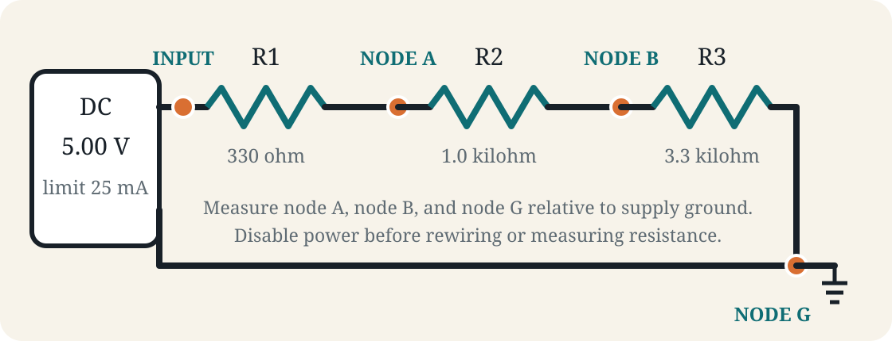
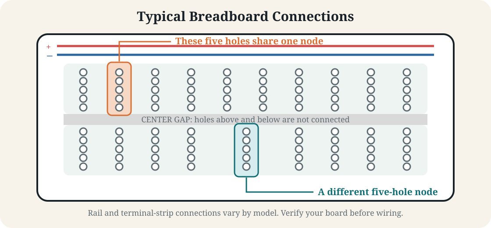
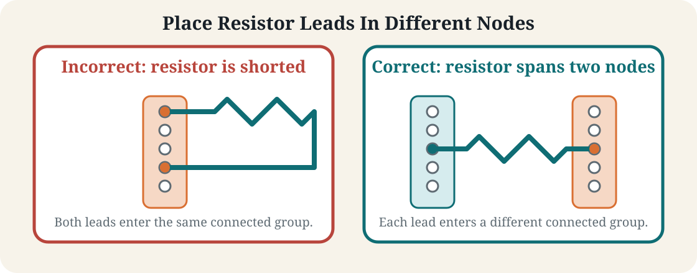
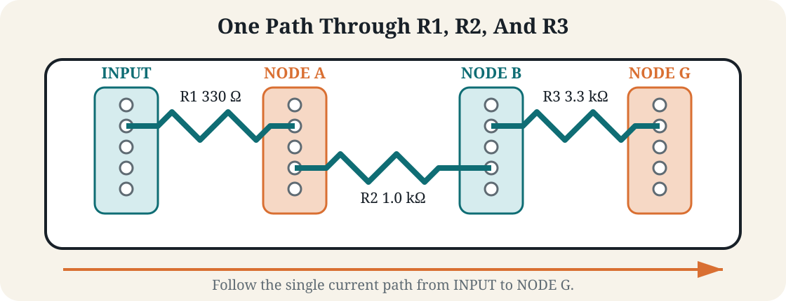
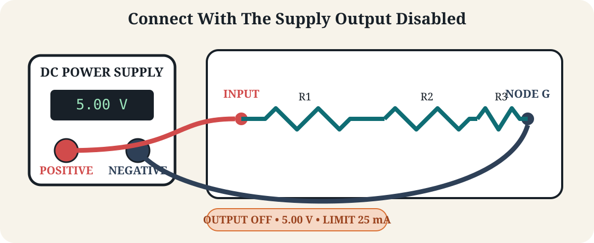

Laboratory
Lab 01 · Week 1 · September 4, 2026
The Series Circuit
Ohm's Law, resistor tolerance, series current, voltage dividers, power, and prediction-versus-measurement evidence
Learning Outcomes
By the End of This Lab
- Measure resistance, voltage, and current with a DMM using the correct connection method
- Predict and verify current and voltage drops in a low-voltage series circuit
- Evaluate whether measured components and circuit results are consistent with tolerance and instrument uncertainty
- Locate an altered component, hidden resistance, reference-path fault, or source mismatch from node-voltage evidence
- Write a claim-evidence-reasoning conclusion that distinguishes direct observations from supported inference
The Big Picture
What You Are Doing
- Learn how to safely measure resistance, voltage, and current.
- Build a known series circuit and verify that it behaves as predicted.
- Use the measured values from that circuit as a trusted baseline, or electrical fingerprint.
- Investigate incident devices built from the same intended circuit, but with one concealed change.
Before Lab
Preparation
- Review the Week 1 definitions, formulas, resistor color code, and series-circuit diagram
- Bring a calculator and open the Lab 1 report before beginning
Student Resources
Diagram and Report Template

Follow These Steps
Lab Walkthrough
Set Up Your Station
- Open the Lab 1 report and enter your name and lab partners before taking measurements.
- Find the DMM, power supply, breadboard, supply leads, DMM probes, jumper wires, and all three resistors. Ask the instructor or TA about anything missing or damaged.
- With the DMM off, place the black probe in the
COMjack and the red probe in the voltage/resistance jack labeledV,Ω, or both. Do not use a current jack yet. - On the power supply, identify the positive terminal, negative terminal, voltage control, and current-limit control. Keep the output disabled.
- Following the in-lab demonstration for your supply model, set the output to 5.00 V. If you cannot confirm both settings, stop and ask for help.
Learn Your Breadboard
- A breadboard does not connect every visible hole. On a typical board, each group of five holes beside the center gap forms one node; power rails run along the edge and may be split in the middle.
- Compare your board with the diagram and its printed markings. When uncertain, use the instructor's continuity demonstration rather than assuming two holes are connected.

- A resistor works only when its two leads are in different nodes. Putting both leads into the same connected group shorts across the resistor, making it electrically ineffective.

Read And Measure The Resistors
- Use the resistor color-code table from the Week 1 guide to identify the rated value and tolerance of R1, R2, and R3. Enter those values in Table 1.
- Confirm that no resistor is connected to the power supply. Resistance must be measured only on a de-energized, isolated component.
- Turn on the DMM and select resistance mode, marked
Ω. If the meter is not autoranging, choose the next range above the expected resistor value. - Hold one probe against each resistor lead. Resistance has no polarity, so the red and black probe order does not matter.
- Wait for a stable reading, record the measured value with units, and repeat for all three resistors.
- Calculate the percent difference between rated and measured resistance, then use the tolerance band to answer “Within tolerance?” in Table 1.
- Take the required photograph showing one resistor connected to the DMM with its resistance reading visible.
Build The Series Circuit
- Place R1, R2, and R3 so current has only one path through all three resistors. The junction of R1 and R2 is node A; the junction of R2 and R3 is node B; the return end of R3 is node G.

- Keep the power-supply output disabled. Connect supply positive to the input side of R1 and supply negative to node G.

- Ask a partner to trace the complete path aloud: supply positive, R1, node A, R2, node B, R3, node G, and supply negative. Correct any branch, gap, or short before enabling power.
- Before applying power, calculate total resistance, the voltage across each resistor, node A and node B voltages, series current, and total power. Enter the predictions in Table 2.
Measure Voltage
- Confirm that the black DMM lead is in
COM, the red lead is in the voltage/resistance jack, and the DMM is set to DC voltage. - Enable the power-supply output. Verify that the supply still reads approximately 5.00 V and is not indicating current-limit operation.
- Measure voltage across R1 by placing the red probe on the side closer to supply positive and the black probe on the side closer to node G. This places the DMM in parallel with R1.
- Record the R1 voltage in Table 2, then repeat the same measurement across R2 and R3.
- Reverse the probes across R1. Record what changes in the displayed reading; the magnitude should remain similar while the sign changes.
- For every node voltage, use supply negative (
V−/COM) as the reference. In your baseline circuit, node G is directly connected toV−/COM, so clipping the black probe to G uses the same reference. Touch the red probe to A and then B, and record both readings in Table 2. - Compare the node voltages with the individual resistor drops. Explain their relationship in the report.
- Take the required photograph showing the probe placement and displayed voltage for one resistor.
Measure Current
- Important: Never place a DMM configured for current directly across the power supply or a component. In current mode, the meter must become part of the one series path.
- Disable the power-supply output before opening the circuit or moving a DMM lead.
- Move the red DMM lead to the appropriate current jack and select DC current. Begin on the highest suitable range unless the instructor demonstrates a safer meter-specific setting.
- Disconnect R3 from node G to create one gap in the series path. Connect the red probe to the R3 side of the gap and the black probe to the node G or supply-negative side.
- Enable the output, read the current, and record it in Table 2. If the display remains zero or shows an overload, disable the output and ask for help rather than changing connections while powered.
- Disable the output. To verify that series current is the same everywhere, repeat the measurement with the meter inserted between R1 and R2 and then between R2 and R3.
- After the final reading, disable the output, remove the meter, restore the original circuit connection, and immediately return the red DMM lead to the voltage/resistance jack.
- Take the required photograph showing the DMM inserted in series and the current reading visible.
Establish Your Baseline
- Finish Table 2 and calculate the percent difference between each predicted and measured value.
- Check that the three measured voltage drops approximately add to the measured source voltage and that current is approximately equal at every series location.
- Treat these measured values as the known-good electrical fingerprint for the circuit. Small differences caused by resistor tolerance and meter resolution are normal.
- Take the required photograph of the complete breadboard circuit connected to the supply.
Investigate Incident Devices X And Y
- The class shares both devices. When either Incident Device X or Y becomes available, begin with that device. Do not open, rewire, or use resistance mode on it.
- Each device has power connections labeled
V+andV−/COM, plus test points labeledA,B, andG. Connect the power supply toV+andV−/COMas directed. - Set the DMM for DC voltage with black in
COMand red in the voltage/resistance jack. Keep the black probe on the device'sV−/COMreference for every node measurement. Use the red probe to measureV+, A, B, and G. - Enter Device X results in Table 3 and Device Y results in Table 4 beside the corresponding known-good measurements. Node G is normally near 0 V relative to
V−/COM; a difference between them is useful diagnostic evidence. - Find the first point where the device differs meaningfully from the baseline. State what you think changed, explain why the measured pattern supports that conclusion, and identify another condition that could create similar behavior.
- Take the required photograph showing a diagnostic node-voltage measurement, pass the device to the next waiting group, and repeat the investigation when the other device becomes available.
Finish And Submit
- Complete the Evidence section by checking that all six required photographs are present and readable.
- Complete the Conclusion section in your own words. Summarize the work, explain measured-versus-predicted differences, identify what was easy or difficult, and state what you learned.
- Disable the power-supply output, set its voltage to zero, return the DMM leads to
COMand the voltage/resistance jack, and return all components as directed. - Save the completed Word report using the required filename and submit it through Learning Suite.
Why This Lab Matters
- In industry, technicians commonly troubleshoot failed or altered hardware by comparing node voltages and signal levels with a known-good baseline
- Point-by-point measurements help locate the circuit segment where expected behavior first changes
- A professional incident handoff must distinguish measurements your team collected from data and conclusions received from another team
- The same evidence-first method supports hardware maintenance, communications troubleshooting, and investigation of possible physical tampering
Submission
- Complete the individual Lab 1 report and submit it through Learning Suite